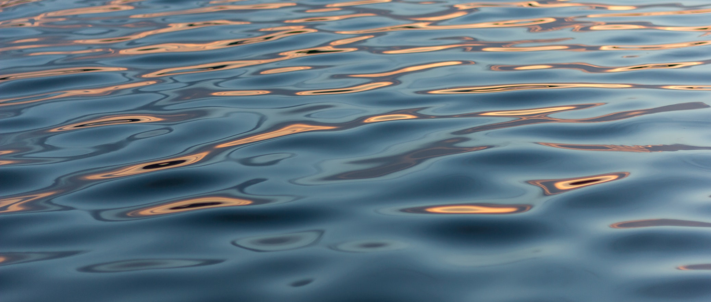

Jeg, som en student på HIØ har lagt et nettsted. På denne nettstedet skal jeg skrive en del artikler om de emnene jeg lærer om i faget webutvikling

Innleveringsfrister
Webutvikling - 4.10 23:59
Innføring i programmering - 4.10 11:59
GRIT - 2.10 23:59
Skalerbar vektorgrafik (skalerbar vektorgrafik) - et format for bilder basert på tekst. Hvert SVG-bilde er definert ved hjelp av kodeoppslag som ligner på HTML. SVG-kode kan inkluderes direkte i HTML-dokumentet. Hver nettleser støtter SVG, bortsett fra bare Internet Explorer versjon 8 og eldre. SVG er basert på XML, så vi kan legge merke til at elementer som ikke har en lukkerkode må være selvlukkende.
Først vi må lage en svg element.
<svg width="900" height="600">
Ved hjelp av SVG vi kan tegne forskellig figurene på en fort måte. Den også tilbyr mulighet å skrive en tekst. Her er en kode på alle figurer